The Microsoft Research Luminaries series, presented by Channel 9, is a monthly series of in-depth conversations with host, Larry Larsen, speaking with some of the world's foremost researchers and scie…
Eric Horvitz on the new era of Artificial Intelligence 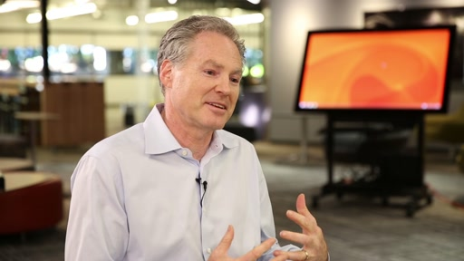[MP4] [0:29:23] [2015/01/27]We are in an era of devices and services that is bringing the dream of Artificial Intelligence to life. Eric Horvitz, head of the Microsoft Research Redmond lab and former AAAI president, describes…
Krysta Svore on Quantum Computing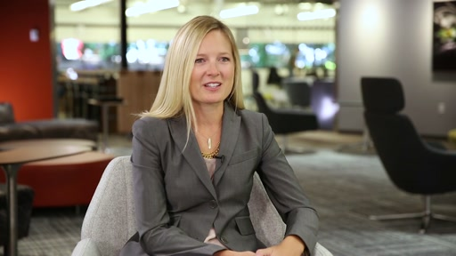[MP4] [0:25:49] [2014/10/23]Microsoft researcher Krysta Svore shares her passion for quantum computing, and how and why her team is creating a unique software architecture for quantum computing called LIQUi|>. This new…
Hrvoje Benko on Bringing Your Living Spaces To Life with Augmented Reality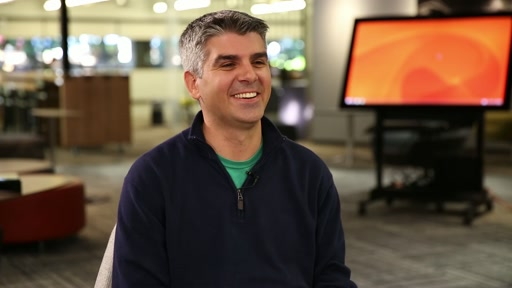[MP4] [0:22:17] [2014/10/06]Award-winning Microsoft researcher, Hrvoje Benko, shares how augmented reality has the potential to enhance the way consumers view technology and entertainment, while also sharing his views on how…
John Platt on AI, Cortana, and Project Adam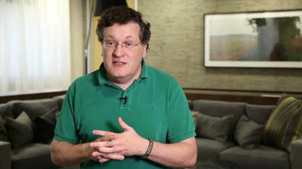[MP4] [0:17:01] [2014/08/05]Microsoft researcher John Platt discusses his enthusiasm for artificial intelligence and machine learning. John is a Microsoft distinguished scientist and deputy managing director of Microsoft…
Deep learning enables large-scale computer image recognition with Project Adam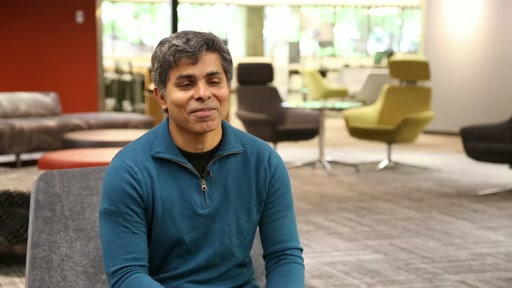[MP4] [0:13:53] [2014/07/15]Trishul Chilimbi, Partner Research Manager for Microsoft Research, discusses Project Adam, and how deep neural networks have enabled large-scale computer image recognition with astounding accuracy.
Ushering in the Era of Programmable Hardware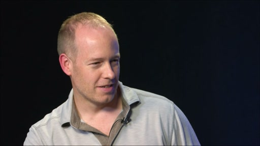[MP4] [0:16:20] [2014/06/17]This week I spoke with Doug Burger about the findings of a Microsoft Research and Bing research project that equipped servers with reconfigurable hardware, in the form of field programmable gate…
Leslie Lamport ACM 2014 A.M. Turing Award Winner 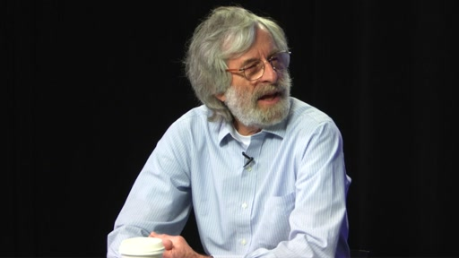[MP4] [0:22:45] [2014/04/15]I recently sat down with Leslie Lamport, principal researcher at Microsoft Research and 2013 Turing Award winner to talk about the impact of his work on computer science, his current passions, and his…
Hekaton Research Makes Significant Speed Improvements to SQL Server 2014 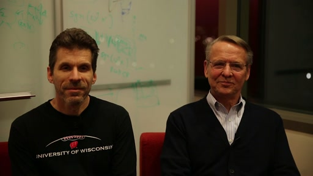[MP4] [0:19:42] [2014/03/19]Paul Larson, Microsoft principal researcher, and Mike Zwilling, principal architect, Microsoft SQL Server, discuss how their collaboration led to the data-access improvements of the Hekaton component…
Leslie Lamport Selected as 2013 ACM A.M. Turing Award Winner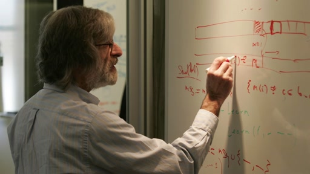[MP4] [0:04:36] [2014/03/18]Leslie Lamport of Microsoft Research is rewarded for his outstanding contributions to computer science with the 2013 ACM A.M. Turing Award. Lamport is well known to computer scientists around the…
Bill Buxton and Jeff Han - Part 4 of 4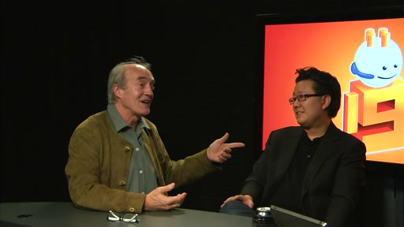[MP4] [0:18:16] [2014/02/27]Recently I wondered what it would be like to get Bill Buxton from Microsoft Research and Jeff Han from Perceptive Pixel together to talk about technology. In part four: The repeated death and…
Bill Buxton and Jeff Han - Part 3 of 4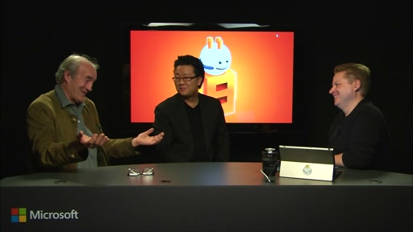[MP4] [0:22:14] [2014/02/20]Recently I wondered what it would be like to get Bill Buxton from Microsoft Research and Jeff Han from Perceptive Pixel together to talk about technology. In part three: We look back at another past…
[Remembering-Richard-Feynman]
Bill Buxton and Jeff Han - Part 2 of 4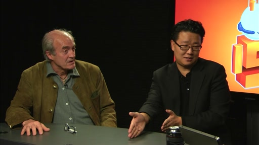[MP4] [0:23:07] [2014/02/13]Recently I wondered what it would be like to get Bill Buxton from Microsoft Research and Jeff Han from Perceptive Pixel together to talk about technology. In part two we find that those who don't know…
Bill Buxton and Jeff Han - Part 1 of 4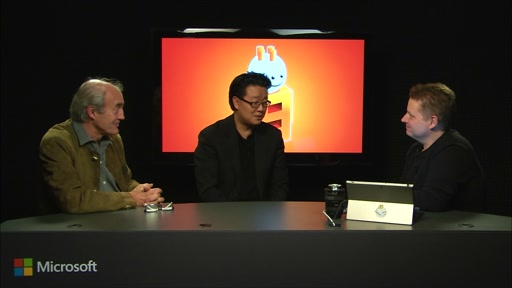[MP4] [0:25:02] [2014/02/06]Recently I wondered what it would be like to get Bill Buxton from Microsoft Research and Jeff Han from Office together to talk about technology. Bill's pioneering work in human-computer interaction…
Ranveer Chandra on Whitespaces and Xbox One Controllers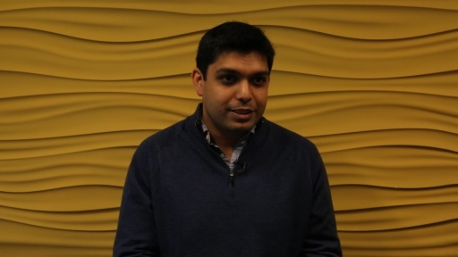[MP4] [0:16:06] [2014/01/30]Senior Researcher Ranveer Chandra shares insights on his work around whitespaces, energy, and wireless protocols, including how he gave Xbox One controllers a new edge.
Lucas Joppa Connecting Environmental and Computer Science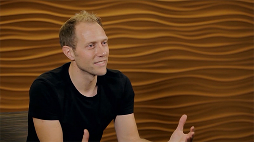[MP4] [0:25:38] [2013/12/16]Lucas Joppa is a scientist in the Computational Ecology and Environmental Science group at Microsoft Research. I spent some time with Lucas to talk about what he does and what led him to this line of…
The Future of Affective Computing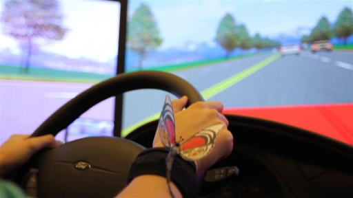[MP4] [0:20:35] [2013/11/19]What if a wearable device could tell you when you need to step back from the keyboard and take a break before you respond to an email? Or if you could wear a device that showed you stress levels…
Luminaries: Jeannette Wing of Microsoft Research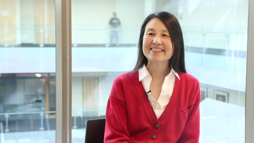[MP4] [0:26:09] [2013/10/30]Jeannette Wing, Corporate Vice President of Microsoft Research, joins us to talk about her outlook on Microsoft Research, the RiSE program and her thoughts behind computational thinking.
Ivan Tashev Helps Makes Microsoft Sound Great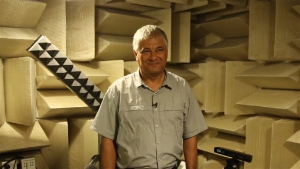[MP4] [0:20:13] [2013/10/17]You may remember Microsof Research's Principal Software Architect Ivan Tashev from previous Channel 9 videos. It's Ivan's job to make sure every audio device from Microsoft sounds as perfect as…